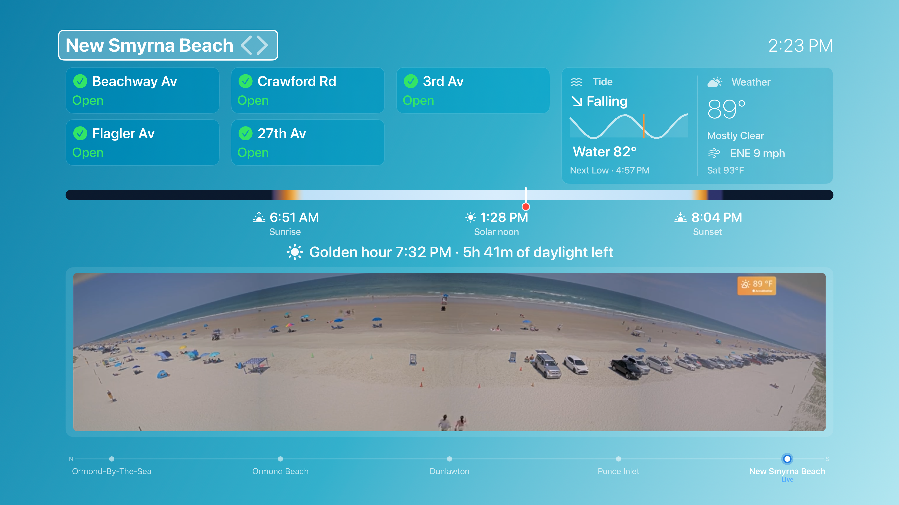
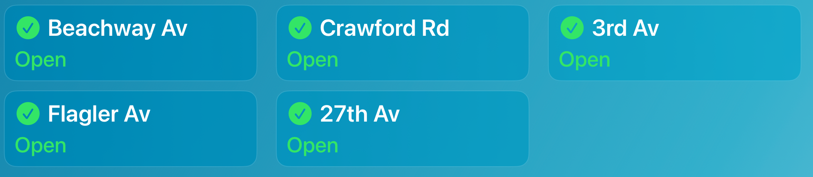
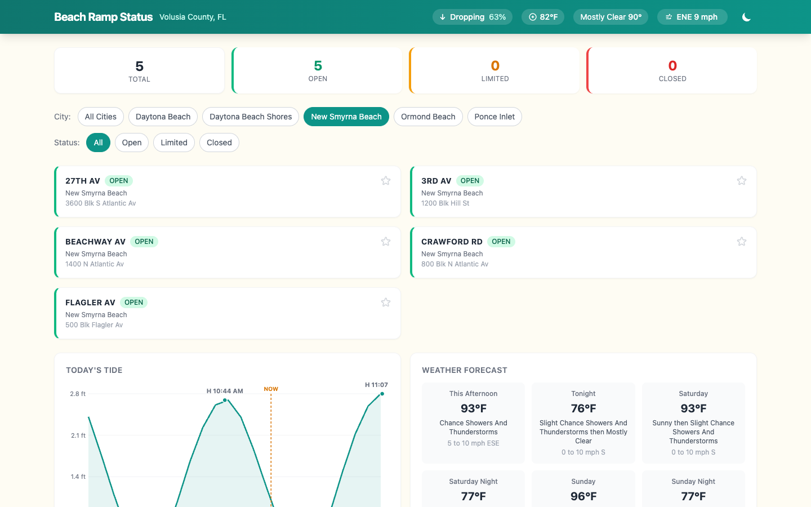
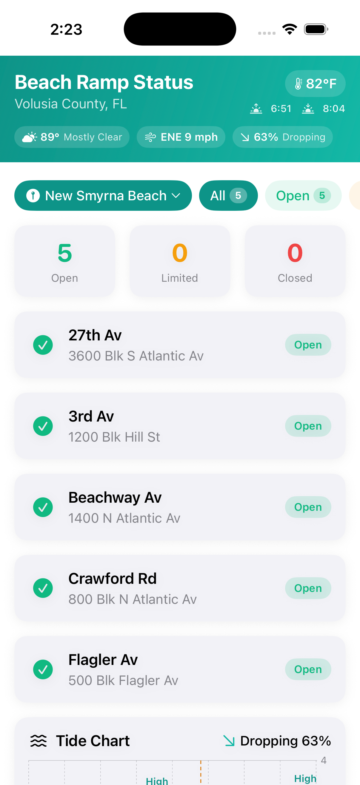
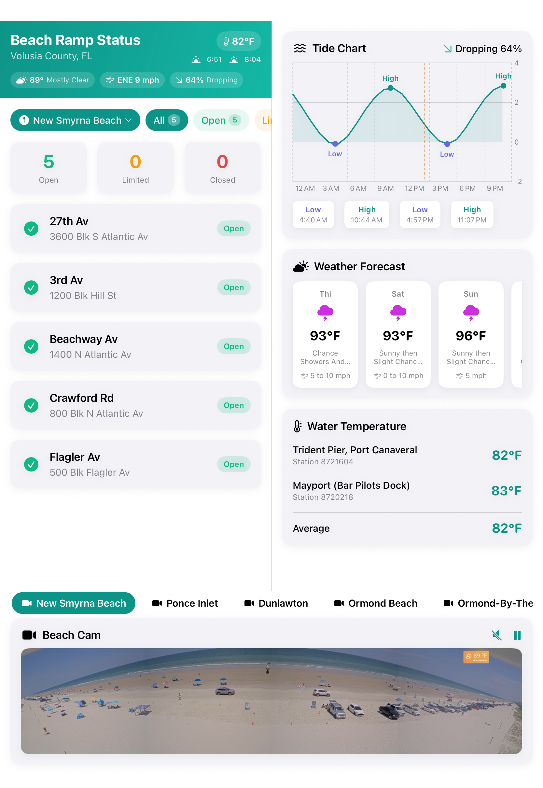

Current state across the web and Apple surfaces, read against the question the product exists to answer.
“Users are locals deciding right now whether to drive onto the beach.”
DESIGN-BRIEF.md
Every surface answers that as inventory: here are five ramps, here are their statuses, here is a chart.
None answers it as a verdict: go to Flagler, the tide is dropping, you have five hours of light.
Every number a verdict needs is already on the screen. Nothing on the screen ranks them.
The primary surface. On in the house nearly all day, watched from across the room.

Composition is sound: one hero, one grid, one strip. The problems are inside the parts, not the arrangement.
Seven palettes interpolated on the sun's real altitude, on separate rising and falling tracks, cross-fading over two seconds. Night and noon are shared so the flip at the solar extremes is seamless.
iPhone and iPad already run the same model in HeaderSky. The cross-platform language isn't missing — it exists, it's tested, and only the TV lets it fill the screen.

The tile never changes. One 16px glass card, a 30px name, a 28px status line, identical padding. Status is carried entirely by a 30px icon and the color of one word.
At ten feet that reads as five equal things. A closed ramp gets exactly the visual weight of an open one, so the tile that matters is the one that looks like all the others.
The greens don't even match: #33E566 here, #10B981 on iPhone. Same semantic, two values, two files.
An 18px line at 50% white, under the timeline caption. Every tile above it keeps showing the last-known status at full confidence — nothing signals that the board stopped listening.
A 22-point SF Symbol at 30% white on a 5% white fill, in a banner 270 points tall. No text, no station name, no “retrying.” The recovery logic behind it is thorough and completely invisible.
Both were built as engineering states, not designed ones. On a screen read from a couch, silence is indistinguishable from a working board.
Web, iPhone and iPad — three personalities and two palettes that never reach the screen.

Warm cream ground, Tailwind teal chrome. The only surface with a beach personality on screen.

Stock system grouped gray under a sun-tracking teal banner. sand50–300 is declared in AppTheme.swift and used nowhere.
A sky gradient owns the screen. tvOcean500–800 and tvSand50 are declared in TVTheme.swift and used nowhere.
Two of the three surfaces carry a beach palette in code that never reaches a pixel. The shared language isn't absent — it's written down twice and applied once.

What has to survive, and the order the surfaces get done in.
Out of scope: TRMNL X and the retired Tidbyt template.
Does the verdict sit above the ramp grid, or does it replace the grid until something is closed?
Does the sun-tracking sky become the whole family's identity, or stay a TV background and a phone banner?
Activity everywhere — as a standing rail on the TV, a ticker, or a section you scroll to?
Should the grid reorder itself when a ramp closes, or is a fixed geographic order more useful?
Pick a direction on 01 and 02 and I'll build the tvOS board.